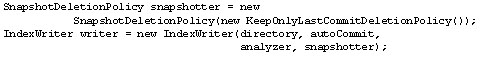
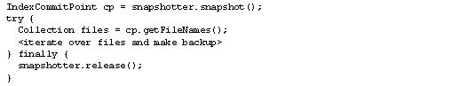

Hot Backups with Lucene |
|---|
| By Michael McCandless, April 2008 |
This article is taken from the forthcoming book Lucene in Action, Second Edition. The 475-page guide is a comprehensive tutorial that shows how to use Lucene to add full-text, cross-platform search to nearly any application. This article introduces a new feature of release 2.3 that enables backing up an index without pausing indexing or restarting searches. |
Picture this: You own a small, very profitable and quickly growing e-commerce Web site. You carefully designed the whole user experience around the powerful open-source search engine Lucene. This search-centric approach is your secret sauce, and you know it’s the reason you are winning over users from your competition. Eighty percent of purchases come through search. You are rightfully proud. |
Then the unthinkable happens: One day your hard drive crashes and your search index becomes corrupt and unusable. So what do you do? You restore from your backups! You do have backups of your search index, right? Amazingly, it's all too common for owners and administrators of search-intensive sites to overlook making regular backups of their search index. In our increasing agile, always-on, search-driven world, failing to backup your search index is a very costly mistake. Fortunately, as of version 2.3, backing up a Lucene index is now surprisingly simple. |
In the modern world of heavyweight, expensive, and complex closed-source enterprise search engines, Lucene is a surprising breath of fresh air. The simple design, carefully exposed API, and incredible feature set, make it trivial to add search to your application. Recently Lucene has been under very active development, quickly adding features previously available only to expensive, closed-source commercial offerings. Hot backups is just such a feature. |
The challenge |
The most obvious way to backup a Lucene index is to close your IndexWriter and make a full or incremental copy of all files in the index. After all, these are just ordinary files stored in a single flat directory in the file system, so this approach will work. While this approach is simple, it has serious limitations. On Windows, if you have an IndexReader open on the index, it can keep files around even when they are no longer needed by the most recent commit. Your backup process then wastes time and space copying these unnecessary files. You can work around that problem by always re-opening your reader, after closing the IndexWriter and before running the backup. |
|
But here's another problem: You can't open another IndexWriter until the backup finishes because the writer might change the index while the backup is running, which would corrupt your backup. This means you cannot make any updates to your index while the backup is running, making your index read-only. Worse, you can neither predict nor control how long this read-only down time will actually be. It could be 30 seconds or it could be an hour or more, depending on the size of your index and the availability of overall IO bandwidth. |
|
So maybe you decide to work around that by giving the highest priority possible to the backup process. This way it finishes as quickly as possible, right? Well, yes, but this will cause serious interference to any IndexSearchers that you are using to search the index. Really you should do the reverse: Give the backup process a low priority, or carefully throttle its IO, so that it does not interfere with searching. |
|
Suddenly this backup process is really a hassle because it interferes so much with ongoing searches and updates. No wonder so many people just don't bother with backups and only discover, the hard way, just how important they really are. |
The solution |
Fortunately, Lucene's simple segmented architecture, described later in this article, presents an elegant solution. With recent changes in 2.3, it is now possible to make a hot backup of your index, which means backing it up without having to close your IndexWriter nor pause indexing or restart searchers. Furthermore, it's fine if the backup process takes as much time as needed because Lucene will protect the necessary files. The backup will be a point-in-time copy of the search index, even if the index is still being changed by the writer. |
Cutting to the chase |
| For the impatient ones among us, this is all you have to do. |
| NOTE: All code samples in this article are based upon release 2.3.1 of Lucene. |
| When you instantiate the IndexWriter, use the new SnapshotDeletionPolicy, like this: |
 |
This creates an IndexWriter with a special deletion policy. At this point, use your writer as you normally would. You can also use a different original deletion policy than KeepOnlyLastCommitDeletionPolicy if you need to. Then, when you need to do a backup, initiate it from your writer, like this: |
 |
|
You can do this from a separate thread, and continue using the writer as usual in your application to make changes to the index. The backup will copy the point-in-time snapshot as of the moment when you called the snapshot() method. |
Here are some important notes to follow when copying the files: |
|
Page 1 |